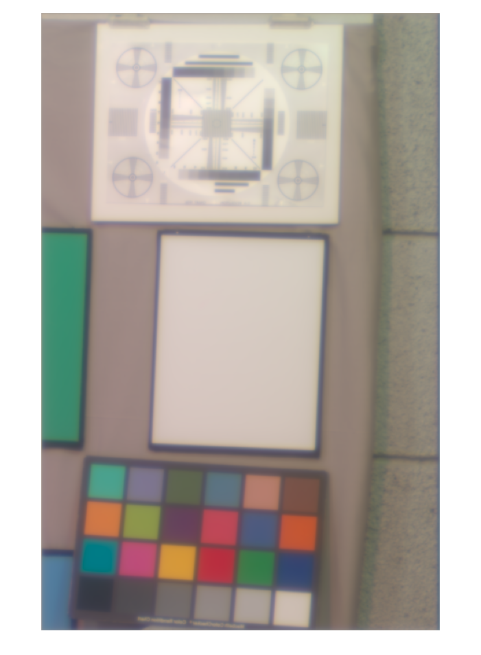

Contents
- Clear, define, etc.
- Hello
- Supress irritating warnings
- Frozen noise, so that we can validate OK
- Figure parameters
- Color matching functions
- Load a hyperspectral image.
- Render the image as sRGB
- Make cone planse
- Write some images planes
- Convert energy to quantal units
- Make the isetbio multispectral scene
- Make optical image
- Convert quantal to energy units
- Make SRGB image for blurred image
- Make cone planes for blurred image
- Restore warning state
- Restore warning state
- Rethrow error
function varargout = FigConePlanes(varargin) % % Show hyperspectral image and resulting cone planes % % This is for Figure 2 of the Annual Review of Vision science paper. % Panel A: sRGBImageUnblurred.tiff % Panel B: Unblurred_400nm.tiff, Unblurred_550nm.tiff, Unblurred_700nm.tiff % Blurred_400nm.tiff, Blurred_550nm.tiff, Blurred_700nm.tiff % Panel C: ConeImageBlurredCropS.tiff, coneImageBlurredCropM.tiff, coneImageBlurredCropS.tiff % % 3/23/15 dhb Wrote it. % 4/21/15 dhb Bring into the validation fold varargout = UnitTest.runValidationRun(@ValidationFunction, nargout, varargin); end function ValidationFunction(runTimeParams)
Clear, define, etc.
ieInit;
Hello
UnitTest.validationRecord('SIMPLE_MESSAGE', sprintf('%s',mfilename)); outputDir = sprintf('%s_Output',mfilename); if (~exist(outputDir,'dir')) mkdir(outputDir); end
Supress irritating warnings
warnS = warning('off','images:initSize:adjustingMag'); try
Frozen noise, so that we can validate OK
randomSeedValue = 26;
rng(randomSeedValue);
Figure parameters
curDir = pwd;
masterFigParamsDir = getpref('bfScripts','masterFigParamsDir');
cd(masterFigParamsDir);
figParams = MasterFigParams;
cd(curDir);
if (exist('../SecondaryFigParams','file'))
cd ..
figParams = SecondaryFigParams(figParams);
cd(curDir);
end
figParams.resizeScale = 1;
% Cropping parameters
figParams.hyperEndRow = 1350;
figParams.hyperStartCol = 1150;
figParams.rowCropLow = 52; figParams.rowCropHigh = 52+383;
figParams.colCropLow = 142; figParams.colCropHigh = 142+484;
% Save parameters
UnitTest.validationData('figParams', figParams);
Color matching functions
S = [400 10 31];
wls = SToWls(S);
load('T_xyz1931');
T_xyz = SplineCmf(S_xyz1931,T_xyz1931,S);
load('T_cones_ss2');
T_cones = SplineCmf(S_cones_ss2,T_cones_ss2,S);
UnitTest.validationData('S', S);
UnitTest.validationData('T_cones', T_cones);
Load a hyperspectral image.
This is from my BearFruit series, and should be an m by n by k matrix.
% Get calibration factors calFactorsAll = importdata(fullfile('FigConePlanes_Data','BearFruitGrayB','calibration.txt')); calFactors = calFactorsAll(:,2); % Read the image imRawSizePixels = 2020; for i = 1:length(wls) imageNameIn = fullfile('FigConePlanes_Data','BearFruitGrayB',num2str(wls(i))); fid=fopen(imageNameIn, 'r', 'b'); tmpImage = fread(fid, [imRawSizePixels,imRawSizePixels], 'ushort'); fclose(fid); tmpImage = imrotate(tmpImage,-90); %tmpImage = imresize(tmpImage,[imSizePixels imSizePixels]); if (i == 1) theHyperspectralImage = zeros(imRawSizePixels, imRawSizePixels,length(wls)); end tmpImg = calFactors(i)*tmpImage; theHyperspectralImage(:,:,i) = tmpImg; clear tmpImg end % Crop/resize etc % % The regions were picked by hand to lead to something that looked good to % me. theHyperspectralImage = theHyperspectralImage(1:figParams.hyperEndRow,figParams.hyperStartCol:end,:); [hyperspectralRows,hyperspectralCols] = size(theHyperspectralImage(:,:,1)); UnitTest.validationData('theHyperspectralImage', theHyperspectralImage);
Render the image as sRGB
Read, resize, and get xyz image planes.
xyzImage = zeros(hyperspectralRows,hyperspectralCols,3);
for i = 1:length(wls)
xyzImage(:,:,1) = xyzImage(:,:,1) + T_xyz(1,i)*theHyperspectralImage(:,:,i);
xyzImage(:,:,2) = xyzImage(:,:,2) + T_xyz(2,i)*theHyperspectralImage(:,:,i);
xyzImage(:,:,3) = xyzImage(:,:,3) + T_xyz(3,i)*theHyperspectralImage(:,:,i);
end
[xyzCal,nX,nY] = ImageToCalFormat(xyzImage); clear xyzImage;
srgbPrimaryCal = XYZToSRGBPrimary(xyzCal); clear xyzCal;
sRGBCal = SRGBGammaCorrect(srgbPrimaryCal); clear srgbPrimaryCal;
sRGBImage = uint8(CalFormatToImage(sRGBCal,nX,nY)); clear SRGBCal;
figure; clf;
imshow(sRGBImage);
imwrite(imresize(sRGBImage,figParams.resizeScale),fullfile(outputDir,[mfilename '_' 'sRGBImageUnblurred' '.' figParams.imType]),figParams.imType);
UnitTest.validationData('sRGBImage', sRGBImage);
Make cone planse
coneImage = zeros(hyperspectralRows,hyperspectralCols,3);
for i = 1:length(wls)
coneImage(:,:,1) = coneImage(:,:,1) + T_cones(1,i)*theHyperspectralImage(:,:,i);
coneImage(:,:,2) = coneImage(:,:,2) + T_cones(2,i)*theHyperspectralImage(:,:,i);
coneImage(:,:,3) = coneImage(:,:,3) + T_cones(3,i)*theHyperspectralImage(:,:,i);
end
temp = coneImage(:,:,1);
imwrite(imresize(temp/max(temp(:)),figParams.resizeScale),fullfile(outputDir,[mfilename '_' 'coneImageL' '.' figParams.imType]),figParams.imType);
temp = coneImage(:,:,2);
imwrite(imresize(temp/max(temp(:)),figParams.resizeScale),fullfile(outputDir,[mfilename '_' 'coneImageM' '.' figParams.imType]),figParams.imType);
temp = coneImage(:,:,3);
imwrite(imresize(temp/max(temp(:)),figParams.resizeScale),fullfile(outputDir,[mfilename '_' 'coneImageS' '.' figParams.imType]),figParams.imType);
UnitTest.validationData('coneImage', coneImage);
temp = coneImage(figParams.rowCropLow:figParams.rowCropHigh,figParams.colCropLow:figParams.colCropHigh,1);
imwrite(imresize(temp/max(temp(:)),figParams.resizeScale),fullfile(outputDir,[mfilename '_' 'coneImageCropL' '.' figParams.imType]),figParams.imType);
temp = coneImage(figParams.rowCropLow:figParams.rowCropHigh,figParams.colCropLow:figParams.colCropHigh,2);
imwrite(imresize(temp/max(temp(:)),figParams.resizeScale),fullfile(outputDir,[mfilename '_' 'coneImageCropM' '.' figParams.imType]),figParams.imType);
temp = coneImage(figParams.rowCropLow:figParams.rowCropHigh,figParams.colCropLow:figParams.colCropHigh,3);
imwrite(imresize(temp/max(temp(:)),figParams.resizeScale),fullfile(outputDir,[mfilename '_' 'coneImageCropS' '.' figParams.imType]),figParams.imType);
Write some images planes
SCALE = true;
temp = theHyperspectralImage(:,:,1);
temp = imresize(temp/max(temp(:)),figParams.resizeScale);
imwrite(temp,fullfile(outputDir,[mfilename '_' 'Unblurred_400nm' '.' figParams.imType]),figParams.imType);
temp = theHyperspectralImage(:,:,2);
temp = imresize(temp/max(temp(:)),figParams.resizeScale);
imwrite(temp,fullfile(outputDir,[mfilename '_' 'Unblurred_410nm' '.' figParams.imType]),figParams.imType);
temp = theHyperspectralImage(:,:,16);
temp = imresize(temp/max(temp(:)),figParams.resizeScale);
imwrite(temp,fullfile(outputDir,[mfilename '_' 'Unblurred_550nm' '.' figParams.imType]),figParams.imType);
temp = theHyperspectralImage(:,:,31);
temp = imresize(temp/max(temp(:)),figParams.resizeScale);
imwrite(temp,fullfile(outputDir,[mfilename '_' 'Unblurred_700nm' '.' figParams.imType]),figParams.imType);
Convert energy to quantal units
theHyperspectralQuantal = zeros(size(theHyperspectralImage));
for w = 1:length(wls)
temp = theHyperspectralImage(:,:,w);
temp = temp(:);
tempQuantal = EnergyToQuanta(wls(w),temp);
theHyperspectralQuantal(:,:,w) = reshape(tempQuantal,hyperspectralRows,hyperspectralCols);
end
Make the isetbio multispectral scene
We have not got the absolute units correct
sceneDegrees = 5;
scene = sceneCreate('multispectral');
scene = sceneSet(scene,'wave',wls');
scene = sceneSet(scene, 'photons', theHyperspectralQuantal);
scene = sceneSet(scene,'fov',sceneDegrees);
%vcAddAndSelectObject(scene); sceneWindow;
UnitTest.validationData('scene', scene);
Make optical image
oi = oiCreate('human'); oi = oiCompute(oi,scene); theHyperspectralBlurredQuantal = oi.data.photons; [mOi,nOi,k] = size(theHyperspectralBlurredQuantal); rowOffset = round((mOi-hyperspectralRows)/2); colOffset = round((nOi-hyperspectralCols)/2); theHyperspectralBlurredQuantal = theHyperspectralBlurredQuantal(rowOffset:rowOffset+hyperspectralRows-1,colOffset:colOffset+hyperspectralCols-1,:); UnitTest.validationData('oi', oi);
Convert quantal to energy units
theHyperspectralImageBlurred = zeros(size(theHyperspectralImage));
for w = 1:length(wls)
temp = theHyperspectralBlurredQuantal(:,:,w);
temp = temp(:);
tempQuantal = QuantaToEnergy(wls(w),temp);
theHyperspectralImageBlurred(:,:,w) = reshape(tempQuantal,hyperspectralRows,hyperspectralCols);
end
UnitTest.validationData('theHyperspectralImageBlurred', theHyperspectralImageBlurred);
Make SRGB image for blurred image
xyzImage = zeros(hyperspectralRows,hyperspectralCols,3);
for i = 1:length(wls)
xyzImage(:,:,1) = xyzImage(:,:,1) + T_xyz(1,i)*theHyperspectralImageBlurred(:,:,i);
xyzImage(:,:,2) = xyzImage(:,:,2) + T_xyz(2,i)*theHyperspectralImageBlurred(:,:,i);
xyzImage(:,:,3) = xyzImage(:,:,3) + T_xyz(3,i)*theHyperspectralImageBlurred(:,:,i);
end
[xyzCal,nX,nY] = ImageToCalFormat(xyzImage); clear xyzImage;
srgbPrimaryCal = XYZToSRGBPrimary(xyzCal); clear xyzCal;
sRGBCal = SRGBGammaCorrect(srgbPrimaryCal); clear srgbPrimaryCal;
sRGBImageBlurred = uint8(CalFormatToImage(sRGBCal,nX,nY)); clear SRGBCal;
figure; clf;
imshow(sRGBImageBlurred);
figParams.figName = 'sRGBImageBlurred';
imwrite(imresize(sRGBImageBlurred,figParams.resizeScale),fullfile(outputDir,[mfilename '_' figParams.figName '.' figParams.imType]),figParams.imType);
UnitTest.validationData('sRGBImageBlurred', sRGBImageBlurred);
 Make cone planes for blurred image
coneImageBlurred = zeros(hyperspectralRows,hyperspectralCols,3);
for i = 1:length(wls)
coneImageBlurred(:,:,1) = coneImageBlurred(:,:,1) + T_cones(1,i)*theHyperspectralImageBlurred(:,:,i);
coneImageBlurred(:,:,2) = coneImageBlurred(:,:,2) + T_cones(2,i)*theHyperspectralImageBlurred(:,:,i);
coneImageBlurred(:,:,3) = coneImageBlurred(:,:,3) + T_cones(3,i)*theHyperspectralImageBlurred(:,:,i);
end
temp = coneImageBlurred(:,:,1);
imwrite(imresize(temp/max(temp(:)),figParams.resizeScale),fullfile(outputDir,[mfilename '_' 'coneImageBlurredL' '.' figParams.imType]),figParams.imType);
temp = coneImageBlurred(:,:,2);
imwrite(imresize(temp/max(temp(:)),figParams.resizeScale),fullfile(outputDir,[mfilename '_' 'coneImageBlurredM' '.' figParams.imType]),figParams.imType);
temp = coneImageBlurred(:,:,3);
imwrite(imresize(temp/max(temp(:)),figParams.resizeScale),fullfile(outputDir,[mfilename '_' 'coneImageBlurredS' '.' figParams.imType]),figParams.imType);
UnitTest.validationData('coneImageBlurred', coneImageBlurred);
temp = coneImageBlurred(figParams.rowCropLow:figParams.rowCropHigh,figParams.colCropLow:figParams.colCropHigh,1);
imwrite(imresize(temp/max(temp(:)),figParams.resizeScale),fullfile(outputDir,[mfilename '_' 'coneImageBlurredCropL' '.' figParams.imType]),figParams.imType);
temp = coneImageBlurred(figParams.rowCropLow:figParams.rowCropHigh,figParams.colCropLow:figParams.colCropHigh,2);
imwrite(imresize(temp/max(temp(:)),figParams.resizeScale),fullfile(outputDir,[mfilename '_' 'coneImageBlurredCropM' '.' figParams.imType]),figParams.imType);
temp = coneImageBlurred(figParams.rowCropLow:figParams.rowCropHigh,figParams.colCropLow:figParams.colCropHigh,3);
imwrite(imresize(temp/max(temp(:)),figParams.resizeScale),fullfile(outputDir,[mfilename '_' 'coneImageBlurredCropS' '.' figParams.imType]),figParams.imType);
temp = theHyperspectralImageBlurred(:,:,1);
temp = imresize(temp/max(temp(:)),figParams.resizeScale);
imwrite(temp,fullfile(outputDir,[mfilename '_' 'Blurred_400nm' '.' figParams.imType]),figParams.imType);
temp = theHyperspectralImageBlurred(:,:,2);
temp = imresize(temp/max(temp(:)),figParams.resizeScale);
imwrite(temp,fullfile(outputDir,[mfilename '_' 'Blurred_410nm' '.' figParams.imType]),figParams.imType);
temp = theHyperspectralImageBlurred(:,:,16);
temp = imresize(temp/max(temp(:)),figParams.resizeScale);
imwrite(temp,fullfile(outputDir,[mfilename '_' 'Blurred_550nm' '.' figParams.imType]),figParams.imType);
temp = theHyperspectralImageBlurred(:,:,31);
temp = imresize(temp/max(temp(:)),figParams.resizeScale);
imwrite(temp,fullfile(outputDir,[mfilename '_' 'Blurred_700nm' '.' figParams.imType]),figParams.imType);
Restore warning state
warning(warnS.state,warnS.identifier);
catch err
Restore warning state
warning(warnS.state,warnS.identifier);
Rethrow error
rethrow(err);
end
end